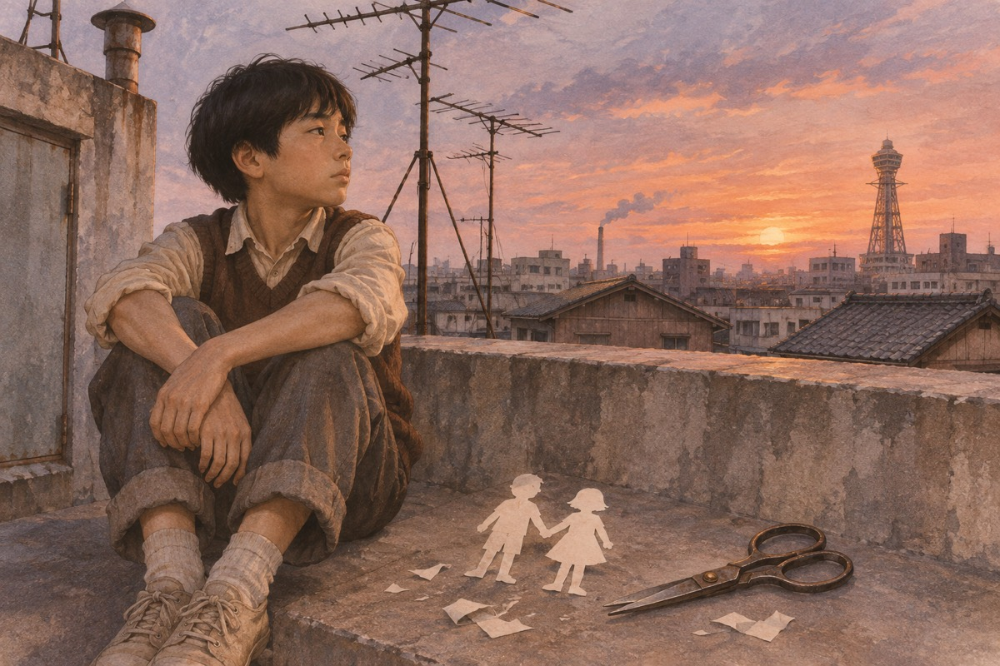
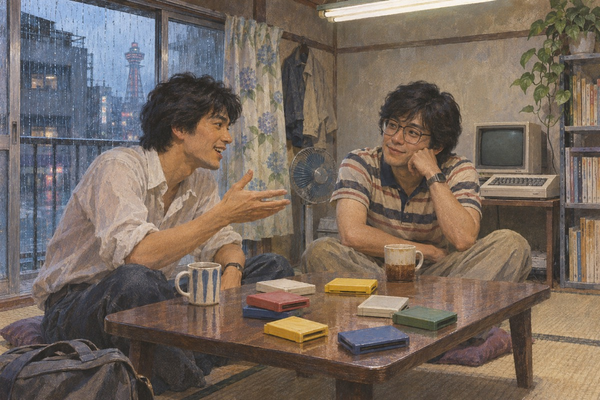
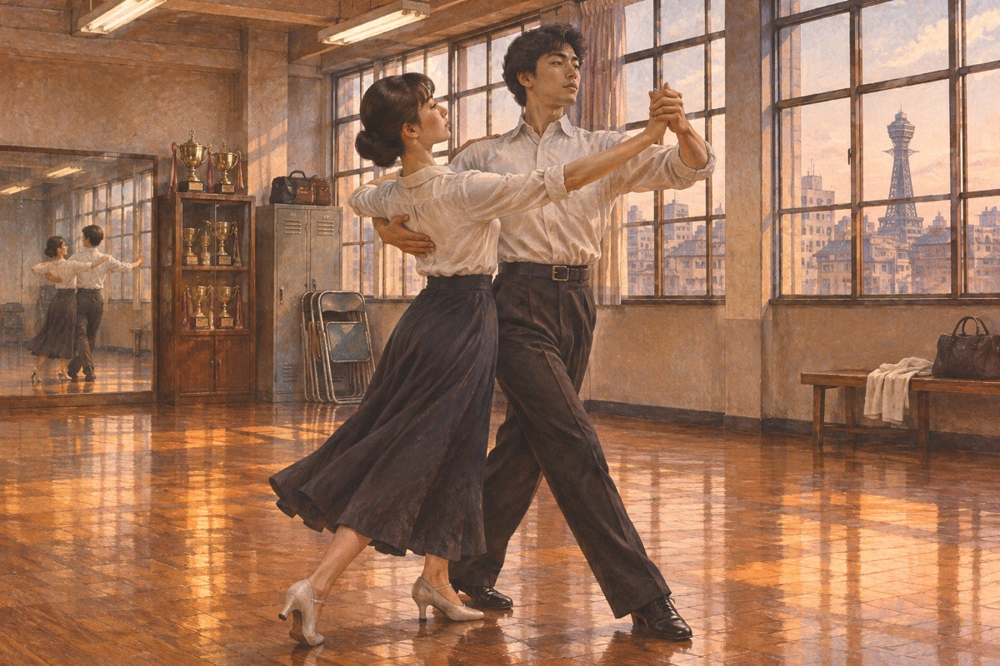
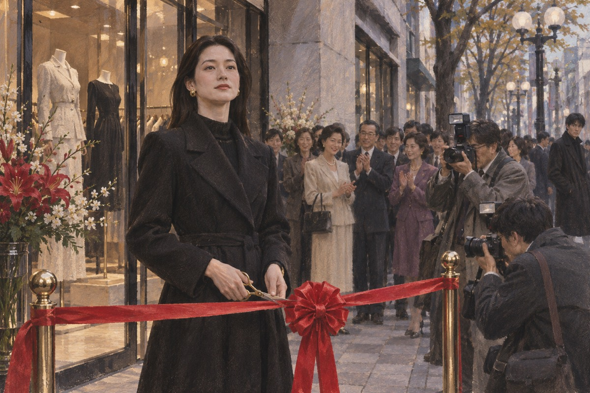

当铺老板之死
桐原洋介的当铺开在寺田町，生意不错。那天下午他带了一百万现金出门，跟妻子说去买一样东西。晚上十点，警车停在一栋盖了一半就停工的大楼前。他在二楼通风管道里，胸口插着一把剪刀。笹垣润三爬上去看了很久，说：凶手是从上面爬进来的。儿子桐原亮司那天在家，警察问他父亲几点出门，他说七点，母亲说六点半。没人追究这半小时。管道口有一道小小的手印，笹垣没有在意。二十五年后他才明白，那是谁的。

母亲的“意外”
西本文代死的时候，女儿西本雪穗在家。煤气灶上煮着味噌汤，窗户关得严严实实。警察判定是意外，因为西本太太那阵子一直在喝酒。只有一件事对不上：雪穗说她是听见门铃去开门，才发现母亲倒在地上，可那栋楼的门铃坏了半年。笹垣第二次见到这个女孩，她站在楼道里，脸色很白，眼睛很静。他说：你妈妈走了。她说：我知道。然后弯腰把门口的拖鞋摆正了。这个动作他记了二十五年。
剪刀
亮司把父亲那把剪刀收进了抽屉。那是当铺里裁布用的老式剪刀，刃口磨得发亮。夏天他一个人在楼顶待到天黑，用剪刀剪纸，剪出一张又一张男孩和女孩牵着手的形状。邻居说这孩子安静，从不吵闹。母亲弥生子那年开始经常不在家，回来时身上有酒味。有一次她问：那天晚上你去哪了？亮司说：在家。她说：你爸死了。他说：我知道。然后低下头，继续剪纸。弥生子后来搬去了一家小酒馆做事，把儿子一个人留在那套房子里。房子有两间，他住朝北的那间。

两个优等生
雪穗被唐泽礼子收养，搬到了成城。礼子教她茶道和花道，教她怎么走路、怎么说话、怎么在别人面前把腰弯得恰到好处。雪穗学得比谁都快。中学里她的成绩是年级第一，作文被贴在走廊上。同年级的桐原亮司在另一所学校，成绩也好，但没人注意他。他们从不说话。有一次两校联合办活动，两人在走廊上迎面走过，谁都没有侧头。走过去了，雪穗的手指在裙缝上轻轻动了一下。班上还有个叫藤村都子的女生，成绩和她不相上下，也说过她的闲话。都子后来在一次放学后出了事，雪穗是第一个赶到的人。
皮条客
亮司十六岁开始替人介绍女孩。他不做别的，只当中介，抽三成，从不多要。找他的人说他讲信用，从不出卖客人的名字。有一次一个客人打了他介绍的女孩，亮司第二天带着那把剪刀去了，把人堵在巷子里。他没有动手，只是把剪刀打开又合上，说：再有下一次，我剪的不是头发。那人后来再没在这一带出现过。警察多年后查这段往事，找不到任何记录——他从不留名字。中介这一行他做到十八岁就收了。收手那天他把记着客人名字的本子烧了，说：以后不做了。
盗版游戏
亮司和园村友彦在公寓里做盗版游戏卡带。那时任天堂一盘卡带要六千日元，他们卖两千。友彦管技术，亮司管渠道。有一次被黑道盯上，亮司一个人去了，回来时衬衫上有血，说是自己摔的。友彦问要不要收手。亮司说：我做的事，都是我自己选的。他把赚的钱分成三份：一份给友彦，一份留着，一份装进信封，塞进一个没人知道的地方。那年冬天友彦的母亲住院，手术费有人匿名交齐了。友彦后来问是不是他，亮司说：不是我。

社交舞社
雪穗进了清华女子大学英文系，加入社交舞社。社长高宫诚是富家子弟，家里开医疗器械公司。雪穗第一次跳舞时脚步跟不上，高宫诚说：没关系，跟着我。她抬头看了他一眼，笑了一下。那天晚上高宫诚跟朋友说：那个女孩不一样。朋友问哪里不一样。他说：她看着你的时候，你觉得她在听你说话。其实她在算。舞社排练结束，雪穗总会留下来把椅子摆好。有人问她为什么，她说：我喜欢整齐。她摆椅子的时候，会把每一把的间距都量成一样宽。

英语会话
雪穗在大学附近报了英语会话班，学费不便宜，她自己打工付。同班的三泽千都留是个老实姑娘，两人成了朋友。雪穗会约她喝茶，记得她生日，会在她失恋的时候陪她坐到天黑。千都留说：雪穗是我见过最好的人。后来千都留才知道，那一年雪穗从她嘴里问走了高宫诚所有的行程、喜好，还有他每天坐哪一趟电车、坐第几节车厢。毕业那天千都留送她一条手帕，雪穗收下，说：我会一直用。三年后千都留在百货公司的柜台后面看见她，她身边站着高宫诚，那条手帕不在她身上。
典子
亮司在一家小酒吧认识了栗原典子。她是医院的药剂师，三十岁，一个人住，养一只猫。她问他做什么工作。他说：什么都做一点。她说：那你一定很累。亮司愣了一下——很久没有人这样跟他说话了。他开始偶尔去她那里过夜，天亮前走。典子给了他一把钥匙。他用过三次，每次都在她上班的时候。典子问他：你有没有想过以后？他说：我没有以后。她笑他矫情，替他把外套挂好。那件外套口袋里有一把剪刀，她摸到过，没有问。
黑市
亮司那几年做的生意越来越杂：盗版软件、假信用卡、帮人办假身份。他给自己换过好几个名字，最常用的一个叫秋吉雄一。他在新宿租了一间小屋，墙上贴满便签，写着日期、地点和名字。友彦见过一次，问这是什么。亮司说：账。友彦说：什么账？他没有回答。那些便签上有几个名字后面画了叉，友彦没敢再看第二眼。画了叉的名字里有一个是女人。友彦问过一次，亮司说：她不该知道太多。后来友彦在报纸上看见那个名字，后面印着两个字：失踪。
第一桩命案
西口奈美江是银行职员，帮亮司洗钱，前后挪了两千万。事情快暴露时她来找亮司，说想跑。亮司说：好，我帮你。他给她订了酒店，买了车票，还塞给她一笔现金。第二天早上，奈美江死在酒店的床上，被自己的丝巾勒死。警方查了很久，查不出凶手。亮司那天照常去店里上班，进门跟友彦说了声早。友彦看见他袖口有一点洗不掉的暗色。案子最后定性为「强盗杀人」，没有嫌疑人。奈美江的姐姐来认尸，问警察：她身上那块表呢？警察说没找到。那块表后来出现在当铺的账上。
出处 · 原著第 6 章
高宫诚的婚礼
婚礼在东京一家酒店办，三百多人。雪穗穿白无垢，笑得很得体。高宫诚的母亲原本反对这门婚事，理由是雪穗出身不明。雪穗用了两年时间让这位母亲改口：每周去一次，带自己做的点心，从不反驳一句。婚礼上母亲致辞说：我这个媳妇，比我儿子懂事。全场鼓掌。雪穗低头，眼睛弯起来。那天亮司在酒店后门站了一小时，抽了三根烟，没有进去。他在后门的台阶上把烟按灭，听见里面在放一支很老的曲子，是新郎新娘进场时放的。他把烟头捡起来，扔进垃圾桶，然后走了。
新婚之夜
新婚之夜高宫诚想碰她，她说今天太累了。第二天说身体不舒服，第三天说妈妈那边有事。一个月过去，高宫诚开始怀疑自己。雪穗从不把拒绝说得难听，她只是让他觉得是自己不好。有一次她背对着他说：对不起，我可能有问题。高宫诚说：没关系，我们慢慢来。她没有回头。她知道这句话会让他愧疚一辈子。高宫诚后来在回忆里写：那几年我总觉得自己做错了什么，可我想不出来。他不知道，一个人只要不断被暗示「你有问题」，最后就会真的相信。
不孕
结婚第二年，雪穗去医院做了检查。医生说她的身体没有问题。她回家把报告放在桌上，高宫诚看了很久。她说：也许是我的心有问题。高宫诚说：不是你的错。从那以后，家里再没提过孩子。高宫诚的母亲来过一次，走的时候脸色很难看。雪穗送她到门口，说：妈妈慢走。门关上，她在玄关站了一会儿，然后去厨房烧水。那天晚上高宫诚在书房睡的。雪穗一个人在卧室里把体检报告折了三折，放进抽屉最里面。她不需要孩子，她只需要这个家一直是她的。
离婚
高宫诚在外面认识了千都留——其实是多年前就该认识的人，只是当年错过了。雪穗早就知道。她请人查了两个月，把每一次见面的时间地点记在一个本子上，然后挑了一个合适的下午，把本子放在客厅茶几上，自己出门了。高宫诚回家看见本子，坐了一夜。离婚时他净身出户，说：是我对不起你。雪穗说：不，是我不好。签字那天雪穗穿了一件浅灰的套装，头发挽得很整齐。她在门口对高宫诚说：以后有事可以找我。高宫诚点头，走出去十几米才想起来，这句话通常该是他说的。
第一家店
雪穗在心斋桥开了一家服装精品店，叫 R&Y。开业那天她穿一身黑，站在门口迎客，笑得很淡。店里的衣服都是她亲自挑的，价位不低，来的都是有钱人家的太太。有人说她运气好，离婚还能开店。她听了只是笑。只有她自己知道开店的钱是从哪来的，那笔钱在银行里躺了三年，一分一分洗干净。R&Y，R 是他，Y 是她。这两个字母她写了十年，没有人问过。开业第一个月她亏了钱，第二个月打平，第三个月开始有人专门从东京过来。
筱冢一成
筱冢一成是筱冢药品的长子，第一次见雪穗是在一次联谊会上。所有人都在跟她说话，只有他坐在角落。雪穗走过去，说：你好像不太喜欢热闹。一成说：我不喜欢假的东西。她笑了一下，说：那你要小心我。一成后来跟朋友说：那个女人，我看不透。朋友说：你看不透是因为你想看。一成没有说话——他知道朋友说对了。联谊会散场时下着雨，一成把自己的伞给了川岛江利子——那个总跟在雪穗身后的女孩。雪穗站在台阶上看着，没有过去。她记住了那把伞的颜色。
亮司的公司
亮司在东京开了一家叫 MUGEN 的公司，做电脑软件。办公室在写字楼九层，员工十几个人，都以为老板姓秋吉。他从不参加年终聚会，从不让别人拍照，名片上只有公司名字和电话。有一次员工在电梯里问他：社长，你住在哪？他说：很近。其实他住在公司楼下的一间小屋，窗户朝北，一年四季不见太阳。公司的账干净得像刚开的。友彦看过一次，说：你这账，连我都查不出问题。亮司说：因为本来就没有问题。他指的是这一本。
窃听
雪穗要拿下一个客户，对方是个老派的布料商。亮司在他家的电话线上装了窃听器，听了两个月，把他所有的软肋记下来：怕老婆、欠赌债、儿子考不上大学。雪穗在饭桌上只提了一句：听说令郎在准备考试？那人脸色变了。三天后合同签了。亮司拆窃听器时，把那卷录音带带走了。他留着所有东西：一屋子的带子，一箱子的照片。带子最后装在一个纸箱里，箱子放在储物间的最高一层。他从不听，也不扔。有一次典子问箱子里是什么，他说：以前的账。
银行卡
雪穗用别人的名字办了十几张银行卡，每张卡里的钱都不超过报警线。她把这些卡交给亮司，亮司再分给不同的人去取。取钱的人彼此不认识，也不知道钱是谁的。有一次一个取钱的人被警察盘问，亮司当天就把那条线全部停掉，损失了八百万。友彦说：太狠了。亮司说：命比钱贵。他说的是别人的命。取钱的人里有一个大学生，被抓住后什么都没说。亮司替他把学费交到毕业，还给他介绍了一份工作。那人对谁都说：我不认识什么秋吉。
今枝
今枝直巳是私家侦探，受筱冢一成委托调查雪穗。他跟了三个月，拍了两百多张照片，查到她少女时代的户籍是伪造的。他把这些整理成一份报告，约一成在一家咖啡馆见面。那天他没有到。三天后有人在空屋里发现他，死因是氰化钾中毒，桌上的咖啡还温着。警察在杯子上只找到他自己的指纹。一成本来要去的，那天临时改了行程。今枝的遗物里有一个没寄出的信封，收件人是一成。里面只有一张照片：雪穗站在 R&Y 门口，阳光很好，影子落在台阶上，有两个。
雪穗的第二次婚姻
筱冢康晴是一成的堂兄，四十多岁，丧偶，有一个女儿。他在一次宴会上认识雪穗，回去就跟一成说：我要娶她。一成说：不行。康晴问为什么。一成说：我说不出理由，但我求你。康晴还是娶了。婚礼比第一次小，雪穗这回穿的是西式婚纱。她在致辞里说：我这一生，最想要的就是一个家。台下有人擦眼泪。一成坐在最后一排，一直看着她的手。康晴的女儿美佳在婚礼上一直没笑。雪穗蹲下来跟她平视，说：以后我们是一家人了。美佳转过头。雪穗还蹲着，笑了一下才站起来。
养母之死
唐泽礼子那年住了院，病不重，医生说观察几天就能出院。雪穗每天去，喂饭、擦身、读报。第五天夜里，礼子死了。医院说是心力衰竭。护士记得那天晚上雪穗来过，待了二十分钟就走了。礼子死后，雪穗继承了她在大阪的房子和一笔存款。她在葬礼上哭得很伤心，致辞几度说不下去。那几天亮司也在大阪，住在一家便宜的旅馆里。礼子死后第三天，雪穗把那间教茶道的屋子重新铺了榻榻米，挂轴换成一幅雪景。有人夸她孝顺，她说：妈妈喜欢干净。
美佳
美佳是康晴的女儿，十四岁，从一开始就恨这个后妈。她把雪穗的鞋子藏起来，在她的茶里放盐。雪穗从不生气，只是笑。有一天美佳放学回家，被人从背后捂住嘴拖进车里。她醒来时躺在一间空屋，衣服被脱了，有人拍了照。雪穗是第一个赶到的人。她抱住美佳，说：不要怕，姐姐在。从那以后，美佳再没有跟她顶过一句嘴。后来美佳的桌上多了一支口红，颜色是雪穗常用的那种。她扔掉，第二天又出现一支。第三次她没扔，把它放进了笔袋。
追查
笹垣润三退休了，但案子没结。他一个人把二十五年的卷宗重看了一遍，把当年的每一个证人都找了一遍。他找到西本家的旧邻居，找到那栋大楼的施工图，找到亮司母亲现在的住址。他去见弥生子，问：那天晚上你儿子几点回家？弥生子说：我不记得了。笹垣说：你记得。她说：我记得，但我不能说。他说：为什么？她说：因为他是我儿子。离开时弥生子送他到门口，忽然说：警官，那孩子小时候很爱笑。笹垣说：我知道。她说：是我把他变成这样的。笹垣没有接话。
开业
大阪心斋桥的 R&Y 分店开业，是雪穗最大的一家店。开业前一天她接到一个电话，挂断后坐在椅子上很久没动。第二天她照常到场，剪彩、致辞、接受采访。有人在人群里看见一个穿黑外套的男人，站了一会儿就走了。雪穗剪彩时手抖了一下，剪刀落在地上。她弯腰捡起来，笑着说：不好意思，我太紧张了。开业当天卖出三十七件衣服，其中三件是同一个人买的。店员说那位客人戴着帽子，付现金，没留名字。雪穗听完，只说了句：知道了。

坠落
笹垣在店门口等到了亮司。亮司看见他，转身就跑。他跑上楼梯，跑到二楼，跨过栏杆。笹垣喊了一声：等等！亮司回头看了他一眼，然后跳了下去。他胸口插着那把剪刀——他从十一岁起就一直留着的那把。笹垣跑过去，听见他说了最后一句话：我累了。人群围上来。雪穗站在店门口，脸白得像纸。她没有哭，没有喊，只是转身走了回去。急救车来的时候他已经没有呼吸。警察在他口袋里找到一枚钥匙和一张折得很小的纸，纸上是一栋房子的平面图，画着一扇窗。
出处 · 原著第 13 章
白夜
警察问雪穗：你认识那个人吗。她说不认识，语气很平静，眼睛没有躲。笹垣站在旁边看着她的脸。他想起很多年前那个在楼道里把拖鞋摆正的小女孩。雪穗转身走上扶梯，背挺得很直。她没有回头。笹垣站在原地看着她的背影，一直看到看不见。小说在这里结束，没有写案子后来怎么了，也没有写她去了哪里。
出处 · 原著末章